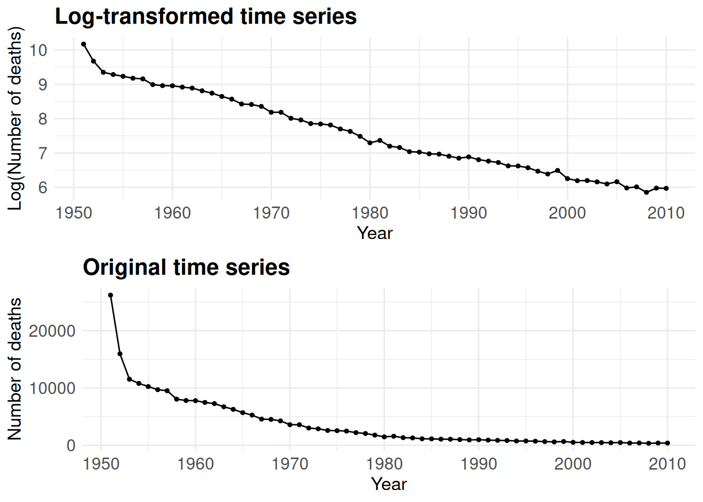
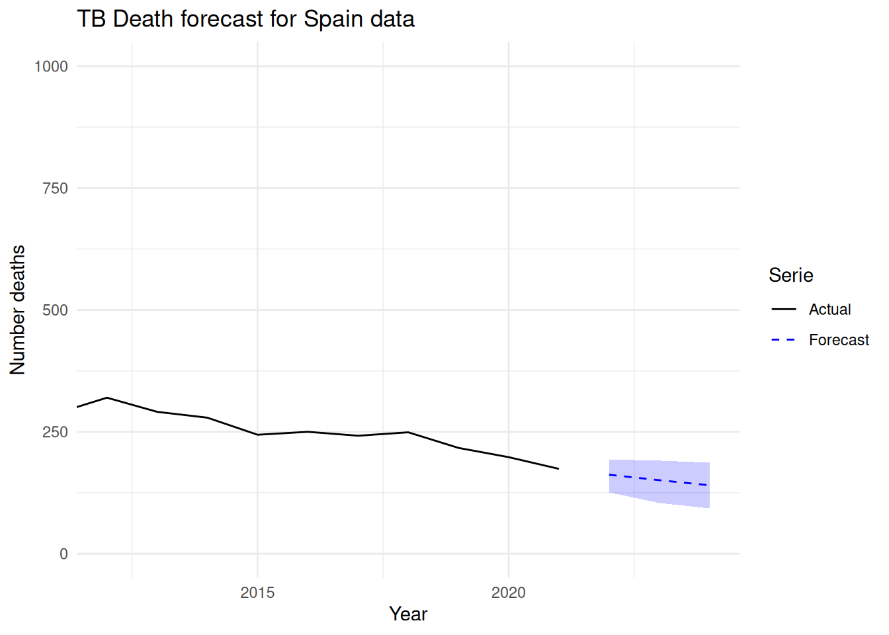

First, we will install and load the necessary packages for this study. Additionally, we will load the required datasets. The analysis is based on three datasets:
Mortality: Downloaded from the World Health Organization, this is the primary dataset for the analysis. It contains the number of tuberculosis-related deaths in all countries. However, our study will focus solely on European countries.
Population: From this dataset, we will extract only the population variable. The source of this data is Our World in Data.
GDP per capita: Similar to the population dataset, we will extract only the gdp_per_capita variable. The source of this data is Data Bank.
First, we will define the criteria for dividing European countries into six distinct regions: North, South, West, East, Central, and the Balkans. The Balkans have been designated as a separate region due to their significant cultural differences from neighboring countries. We will add a new variable to the dataset that specifies the subregion to which each country belongs.
The map below shows the division that would be used from this point forward.
We are considering Greece as part of the Southern region due to the cultural differences with the Balkan countries. Now, we would choose a country to represent each European subregion. We will select five European countries to analyze their trends in the number of tuberculosis-related deaths. The selection criteria will ensure that the chosen countries represent different regions of Europe (e.g., North, South, etc.) while also having a sufficient number of time observations to construct a reliable time series. Additionally, we aim to include countries that exhibit distinct trends in tuberculosis mortality, making the study more insightful by allowing for a comparative analysis and accurate forecasting of different patterns.
As a first step, we will address any missing values (NA) in the dataset for the variable Number_Deaths in each selected country. We are going to choose countries that at least have 40 years with data.
country_name n
1 Netherlands 73
2 Iceland 72
3 Sweden 72
4 Denmark 71
5 France 71
6 Ireland 71
7 Spain 71
8 Switzerland 71
9 United Kingdom of Great Britain and Northern Ireland 71
10 Finland 70
11 Italy 70
12 Hungary 68
13 Austria 67
14 Belgium 67
15 Norway 66
16 Portugal 62
17 Poland 61
18 Greece 60
19 Romania 60
20 Bulgaria 58
21 Luxembourg 56
22 Malta 55
23 Latvia 42
24 Estonia 40
25 Lithuania 40
26 Russian Federation 40
Lets study each subregion:
Southern Europe. Due to the geographical origin of the authors, we will choose Spain as the representative country of this region.
Northern Europe. We observe that Iceland has 72 out of 74 years with recorded values for the selected variable, making it a suitable choice to represent the North region of Europe.
Western Europe. As Netherlands is the country with a greatest number of values, it would be our choice for this specific region.
Eastern Europe. It is noticeable that eastern countries are the ones with a less number of recorded values (most of them have only 40 or less); then, it would be a special region to analyse. Lithuania will represent the Northeast region, with 40 recorded values. Even though there are nearby countries with longer recorded periods, the tendency of Lithuania stands out among the rest, which will make for an interesting analysis.
Central Europe. Switzerland will be the representative country of the central region. It has 71 recorded values, that will fit perfectly when modeling the time series.
Balkans region. For the Balkans region, we have selected Romania, which has 60 recorded values. It will be an interesting case of analysis due to its tendency, that is a bit different as the other countries.
The selection criteria prioritize minimizing the number of missing values (NA) while ensuring a diverse representation of different regions in Europe. As we have discussed trends, let’s display the trend in tuberculosis-related deaths for the selected countries.
plot_spain <- chosen_countries %>%filter(country_name =="Spain") %>%ggplot(aes(x = year, y = number_deaths)) +geom_line() +theme_minimal() +labs(title ="Spain" ) +theme(plot.title =element_text(hjust=0.5, size =10),axis.title.x =element_blank(),axis.title.y =element_blank())plot_sweden <- chosen_countries %>%filter(country_name =="Sweden") %>%ggplot(aes(x = year, y = number_deaths)) +geom_line() +theme_minimal() +labs(title ="Sweden", y ="Number of deaths") +theme(plot.title =element_text(hjust=0.5, size =10),axis.title.x =element_blank(),axis.title.y =element_blank())plot_netherlands <- chosen_countries %>%filter(country_name =="Netherlands") %>%ggplot(aes(x = year, y = number_deaths)) +geom_line() +theme_minimal() +labs(title ="Netherlands", y ="Number of deaths") +theme(plot.title =element_text(hjust=0.5, size =10),axis.title.x =element_blank(),axis.title.y =element_blank())plot_romania <- chosen_countries %>%filter(country_name =="Romania") %>%ggplot(aes(x = year, y = number_deaths)) +geom_line() +theme_minimal() +labs(title ="Romania", y ="Number of deaths") +theme(plot.title =element_text(hjust=0.5, size =10),axis.title.x =element_blank(),axis.title.y =element_blank())plot_latvia <- chosen_countries %>%filter(country_name =="Latvia") %>%ggplot(aes(x = year, y = number_deaths)) +geom_line() +theme_minimal() +labs(title ="Latvia", y ="Number of deaths") +theme(plot.title =element_text(hjust=0.5, size =10),axis.title.x =element_blank(),axis.title.y =element_blank())plot_switzerland <- chosen_countries %>%filter(country_name =="Switzerland") %>%ggplot(aes(x = year, y = number_deaths)) +geom_line() +theme_minimal() +labs(title ="Switzerland", y ="Number of deaths") +theme(plot.title =element_text(hjust=0.5, size =10),axis.title.x =element_blank(),axis.title.y =element_blank())plot_spain
In order to build accurate time series models, the data must be stationary—meaning it should exhibit constant mean and variance over time. Since developed countries (e.g., Spain, the Netherlands) show a strong downward trend in TB death counts over the years, we begin by transforming the original data using logarithms. This transformation stabilizes the variance and linearizes exponential trends, making the data more suitable for ARIMA modeling.
Spain
We start with the Spanish data:
Let’s check the ACF and PACF of the series:
Upon inspecting the ACF and PACF plots, we observe a strong autocorrelation in the undifferenced series, particularly at lower lags. To remove this non-stationarity, we apply first-order differencing:
The resulting ACF and PACF plots indicate that autocorrelations have been adequately removed, and the series is now stationary:
We fit an ARIMA model automatically selected by auto.arima() from the forecast package, which chooses the best-fitting model based on information criteria (AICc by default):
Ljung-Box test
data: Residuals from ARIMA(0,1,0) with drift
Q* = 2.1127, df = 10, p-value = 0.9954
Model df: 0. Total lags used: 10
To properly check the normality of the residuals, we do the Shapiro-Wilk test:
Shapiro-Wilk normality test
data: residuals(fit_spain)
W = 0.90578, p-value = 5.889e-05
The ARIMA model applied is the ARIMA(0,1,0), as it is the best suited fot the series. Residual diagnostics support this model. The Ljung-Box test yields a p-value of 0.9954, suggesting no significant autocorrelation in the residuals. However, the Shapiro-Wilk test for normality gave a p-value of 5.88×10⁻⁵, leading us to reject the null hypothesis of normality. This implies that while the model captures the time dependence effectively, the residuals deviate from normality. To account for this, bootstrapping was enabled during forecasting to generate more robust prediction intervals.
Setting bootstrap = TRUE enables the computation of prediction intervals using bootstrapped innovations rather than assuming normality. This is particularly useful when residuals show slight deviations from normality or the model is very sensitive to error structure. Bootstrapping provides more robust and possibly asymmetric confidence intervals. However, it also increases computational time.
Now, to forecast future values, we apply the forecast()function:

Next, we back-transform the forecasts to the original scale by applying the exponential function:
The fitted values and forecasts are then plotted alongside the original series to assess model performance:
To display the forecasts an their associated uncerainty, we prepare a data frame with the exponential of the forecast and confidence intervals:
year mean lower upper
1 2022 161.9709 125.63098 193.3054
2 2023 150.7735 104.04564 190.9305
3 2024 140.3501 93.07291 186.6975
Finally, we visualize the forecasts:

The ARIMA(0,1,0) model applied to the log-transformed TB death series for Spain captures the downward trend effectively, with residual diagnostics confirming no significant autocorrelation. However, the residuals deviate from normality, which was addressed using bootstrapped forecasts to provide more reliable prediction intervals. The fitted values closely track the actual data, and the short-term forecasts show a continued decline in TB deaths, with relatively narrow confidence intervals, reflecting stability in the trend. These results suggest that ARIMA(0,1,0) is a simple yet adequate model for capturing and forecasting TB mortality trends in Spain.
Netherlands
We now apply the same methodology to the Netherlands, a country that also shows a notable long-term decrease in TB deaths.
ggplot(data_netherlands_1, aes(x = year)) +geom_line(aes(y = number_deaths, color ="Actual")) +geom_line(aes(y = exp_fitted, color ="Fitted"), linetype ="dashed") +labs(title ="Actual vs Fitted TB Deaths in Netherlands with Arima(0,1,1)",x ="Year", y ="Number of Deaths",color ="Legend") +ylim(0,1000) +xlim(1980,2021) +theme_minimal()
Warning: Removed 31 rows containing missing values or values outside the scale range
(`geom_line()`).
Removed 31 rows containing missing values or values outside the scale range
(`geom_line()`).
ggplot(data_netherlands_2, aes(x = year)) +geom_line(aes(y = number_deaths, color ="Actual")) +geom_line(aes(y = exp_fitted, color ="Fitted"), linetype ="dashed") +labs(title ="Actual vs Fitted TB Deaths in Netherlands with Arima(0,1,1)",x ="Year", y ="Number of Deaths",color ="Legend") +ylim(0,1000) +xlim(1980,2021) +theme_minimal()
Warning: Removed 31 rows containing missing values or values outside the scale range
(`geom_line()`).
Removed 31 rows containing missing values or values outside the scale range
(`geom_line()`).